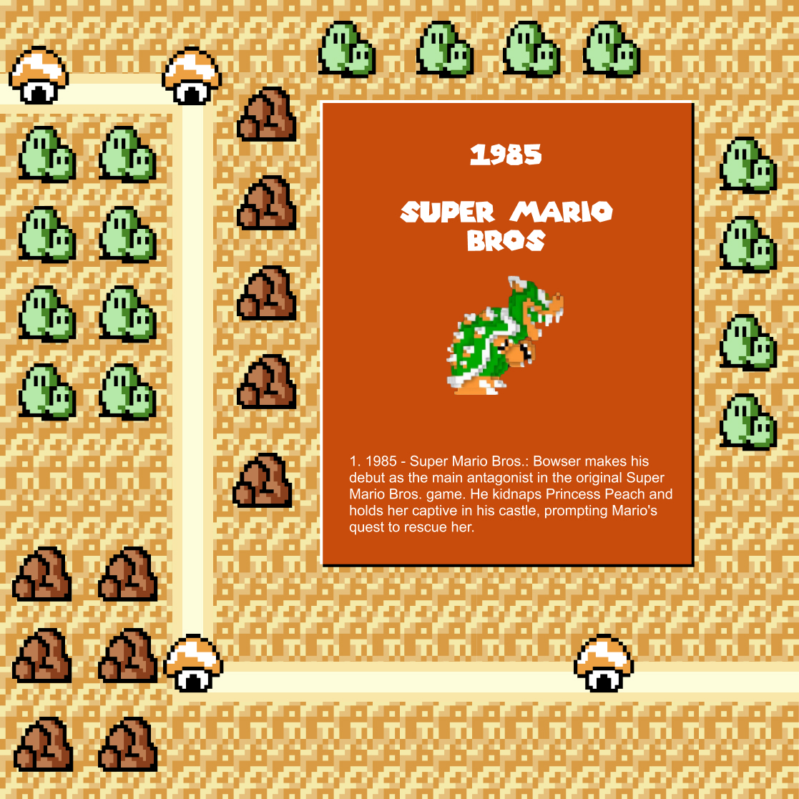
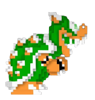
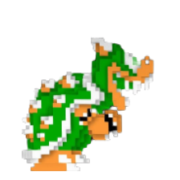

  1985 super mario bros 1985 - Super Mario Bros: Bowser makes his debut as the main antagonist in the original Super Mario Bros. game. He kidnaps Princess Peach and holds her captive in his castle, prompting Mario's quest to rescue her. 